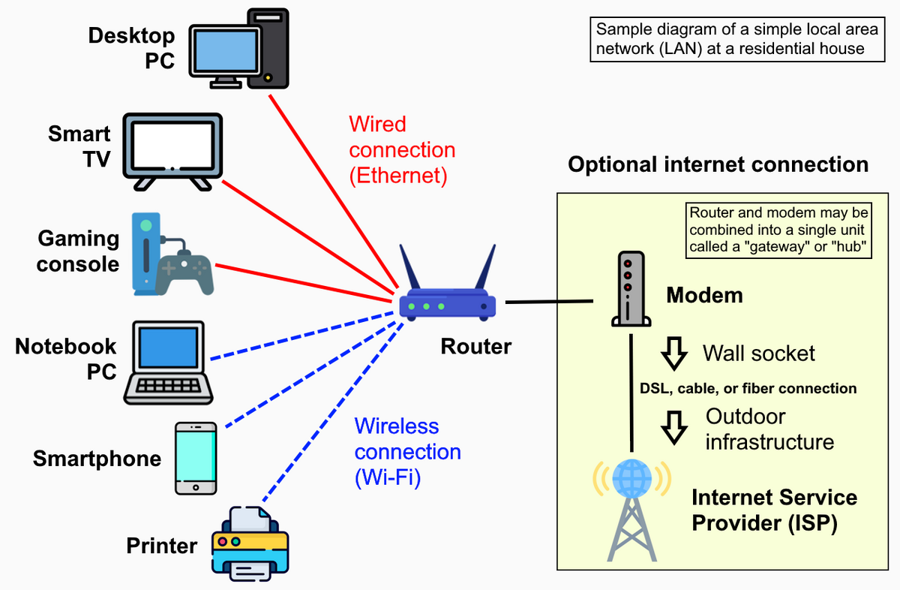

This presentation covers the basics of networking, including protocols and security measures.
A network is a system of connected elements, such as computers, devices, or people, that allows them to communicate and share information. The term can refer to a computer network connecting devices to share hardware and data, or it can describe a group of people with shared interests or organizations that work together.

ipconfig ip address= This command displays the current IP configuration of the device.
nslookup name = This command queries the Domain Name System (DNS) to obtain domain name or IP address mapping information.
ping = This command sends a message to a device and waits for a response to check connectivity e.g its like the game ping pong you ping the opponent and he pongs you.
ssh name@ ip address= This command connects with any server with a specified IP address.